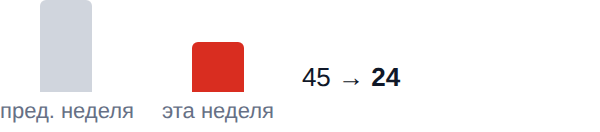
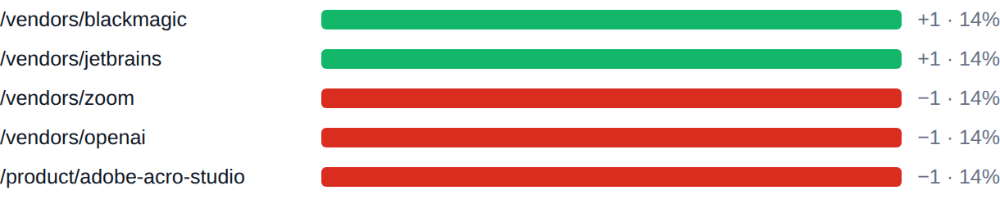
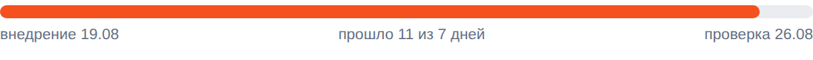

BIZSoft Growth Intelligence Daily Search, Demand & Experiment Control · 30.08.2026 ПОИСК: смешаннаяДАННЫЕ: свереноОТ ВАС: не требуется Яндекс по 27.08 · Google по 27.08 · Метрика по 29.08 · спрос 20.08 | | От вас: Решений от вас сегодня не требуется. Остальное система ведёт сама. | Показатели Видимость в Яндексе 2 079 показов за неделю +1011 +94,7% На первой странице 682 из 868 запросов выборки. CTR 0,53% по всему сайту. 21.08–27.08 · Яндекс.Вебмастер, весь сайт, дневные ряды · достоверность: достаточная |
Видимость в Google 24 показов за неделю −21 −46,7%  Видимость в Google: 45 → 24. Переходы из Google за окно: 1. 21.08–27.08 · Google Search Console, весь сайт, дневные ряды · достоверность: низкая, малые числа |
Органический трафик 15 визитов за неделю −5 Визиты из поиска: весь сайт, все поисковые системы. 23.08–29.08 · Яндекс.Метрика, весь сайт, дневные ряды · достоверность: низкая, малые числа |
Коммерческий сигнал 50 целевых событий Это автоцели Метрики, а не подтверждённые обращения. Сайт отправляет 0 целей, которых нет в счётчике, поэтому счётчик их отбрасывает. Ноль по ним означает отсутствие замера, а не отсутствие обращений. 16.08–29.08 · Яндекс.Метрика, весь сайт · достоверность: низкая: 50 событий |
| Сигналы дня Показы в Google за неделю 45 → 24 (−21)Страницы сайта стали показываться реже. достоверность: достаточная Страницы в поиске Яндекса 478 → 467 (−11)Часть страниц выпала из поиска Яндекса. достоверность: достаточная Запросы выборки на первой странице 648 → 682 (+34)Внутри выборки прибавилось запросов на первой странице. достоверность: достаточная | Реклама — Яндекс.Директ расход в деньгах кабинета (без НДС); заявки и CPA подключаются связкой с Метрикой — этап B bs-test-2026-09, за 29.08: 0 ₽ за день, с запуска 485 из 4 098 ₽ недельного лимита. Claude — 0 ₽, 0 кликов · мало данных (0 кл.) Claude Code — 0 ₽, 0 кликов · мало данных (6 кл.) Midjourney — 0 ₽, 0 кликов · мало данных (6 кл.) ChatGPT Business — 0 ₽, 0 кликов · мало данных (6 кл.) | Что дало изменение Google. Изменение −1 по страницам. Прибавили: /vendors/blackmagic, /vendors/jetbrains. Потеряли: /vendors/zoom, /vendors/openai, /product/adobe-acro-studio. накопленное окно 26 дней, сдвинуто на сутки +1 /vendors/blackmagic 14% изменения +1 /vendors/jetbrains 14% изменения −1 /vendors/zoom 14% изменения −1 /vendors/openai 14% изменения −1 /product/adobe-acro-studio 14% изменения  /vendors/blackmagic +1; /vendors/jetbrains +1; /vendors/zoom −1; /vendors/openai −1; /product/adobe-acro-studio −1 Яндекс. Изменение +204 по запросам. Прибавили: купить подписку суно премьер. выборка топ-100 запросов, окно 2026-08-16–2026-08-27 +27 купить подписку суно премьер 7% изменения | Контроль эксперимента SEO-EXP-001 · заголовки и блок вопросов на 5 карточках Проверяем: понятнее ли описание страницы в выдаче для того, кто покупает на компанию, и чаще ли по ней переходят Запуск 19.08, прошло 11 дней при минимуме 7 дн. и 500 показов.
Новый вариант на сайте: нет данных из 5 страниц, проверено напрямую.
Обновление сниппета в выдаче: нет данных.
Вывод: наблюдаем — экспозиция набрана, ждём контрольную дату. Следующая проверка 26.08.  Прошло 11 из 7 дней, проверка 2026-08-26. Ещё в работе, выводы по расписанию CONTENT-001 — 11 дней из 7 дн. и 500 показов, проверка 26.08. SEO-EXP-002 — 10 дней из 7 дн. и 500 показов, проверка 26.08. SEO-EXP-003 — 1 день из 7 дн. и 500 показов, проверка 26.08. PAGES-EXP-001 — 0 дней из 7 дн. и 500 показов, проверка 26.08. |
| Система уже делает Показаны задачи со сменой статуса, блокировкой или сроком в ближайшую неделю | Где ближе всего рост оплата motion array юридическим лицом 49 показов по запросу за период, средняя позиция 3.1 — в первой десятке, но без переходов Потенциал: переходы при том же объёме показов — платить за них не нужно Что делаем: переписать заголовок и описание страницы под запрос решение к 26.08 · достоверность: low оплата artlist юридическим лицом 49 показов по запросу за период, средняя позиция 3.8 — в первой десятке, но без переходов Потенциал: переходы при том же объёме показов — платить за них не нужно Что делаем: переписать заголовок и описание страницы под запрос решение к 26.08 · достоверность: low claude team купить 46 показов по запросу за период, средняя позиция 7.28 — в первой десятке, но без переходов Потенциал: переходы при том же объёме показов — платить за них не нужно Что делаем: переписать заголовок и описание страницы под запрос решение к 26.08 · достоверность: low | Интерес к вендорам в поиске Интерес в нашей выдаче, не рыночный спрос (его измеряет Вордстат). Depositphotos — 440 показов в Яндексе (лучшая позиция 2.8) Perplexity — 105 показов в Яндексе (лучшая позиция 3.0) CorelDRAW — 104 показа в Яндексе (лучшая позиция 5.2) Проверить платным трафиком: «оплата artlist юридическим лицом» (49 показов, позиция 3.8) — конверсионность запросов не измерена. | Спрос и направления развития Замер спроса от 30.08, обновляется по расписанию исследования Мы видим 287 788 покупательских запросов в месяц по 171 направлениям каталога. Своя страница есть под 88% этого спроса, в поиске находится 60%, на первой странице — 22%. Без страницы остаётся 17 778 запросов в месяц — это направления, где спрос есть, а нас в выдаче нет. Ещё 52 137 запросов в месяц не отнесены ни к нам, ни к чужому товару: это голые фразы омонимичных брендов (box — 30 187, zoom — 10 813, bubble купить — 5 732). В спрос и в решения об ассортименте они не входят. 88% есть своя страница | 60% страница в поиске | 22% на первой странице |
Ближайшее направление: anthropic. Позиция хорошая, показы есть, переходов мало — 27 231 запрос в месяц. Что делаем: эксперимент со сниппетом. | Перспективные идеи продвижения бесплатные каналы; полный список и статусы — в веб-отчёте Яндекс Бизнес: развить товарный фид как канал — канал уже приносит обращения без бюджета — заявка по шрифту Monotype 28.08 пришла переходом yandex.ru / referral из товарной карточки Бизнес-каталога, куда сайт отдаёт фид /yandex-business.xml. Стоит проверить полноту фида, фото и описания карточек | Каких вендоров добавить Российские вендоры исключены: их лицензии продаются напрямую, услуга оплаты из-за рубежа к ним неприменима. Проверили спрос на 39 зарубежных разработчиков вне каталога: у 4 он подтверждён, суммарно 1 532 запросов в месяц. Из них: 1 с оплатой картой можно заводить сразу, 3 требуют ручной проверки оплаты. aws · классический 1 133 запроса в месяц · покупка на сайте есть, платёжную систему подтвердить при первой сделке. Рекомендуем добавить с проверкой: одна карточка вендора. Проверить вручную: nordvpn, ansys, hailuo — спрос есть, способ оплаты автоматически определить не удалось. | Здоровье данных Сверено: охваты сопоставлены: KPI считаются по всему сайту Показы и клики Яндекса, показы Google, визиты Метрики и сессии GA4 считаются по всему сайту за окна равной длины. Выборка запросов используется только в разделе возможностей и на KPI не влияет. Показы и переходы Яндекса относятся к весь сайт, визиты Метрики — к весь сайт и ко всем поисковым системам сразу. Сопоставлять корректно показы с переходами одной выборки, а визиты Метрики — с сессиями GA4. Конвейер: 8 из 8 контуров отработали в срок. |
| Следующие проверки 26.08 — SEO-EXP-001: первый замер кликабельности изменённых страниц 26.08 — CONTENT-001: первый замер кликабельности изменённых страниц 26.08 — SEO-EXP-002: первый замер кликабельности изменённых страниц До этих дат выводы по эксперименту не делаются: данных выдачи за более короткий срок недостаточно, чтобы отличить эффект от обычных колебаний. | | Полный отчётЖурнал работ |
|